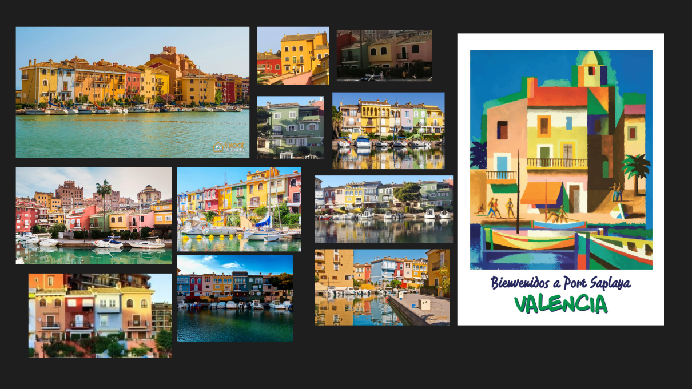
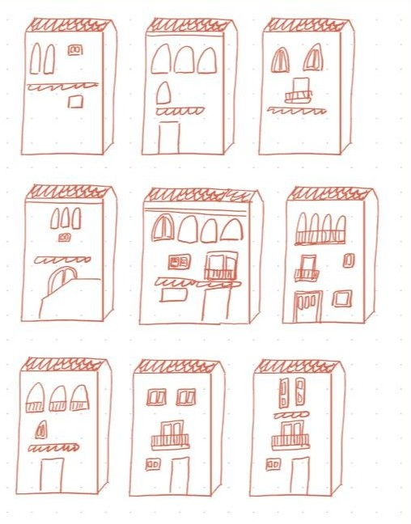
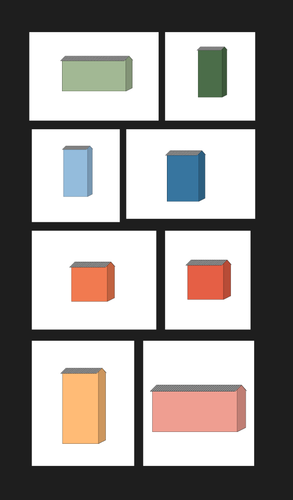
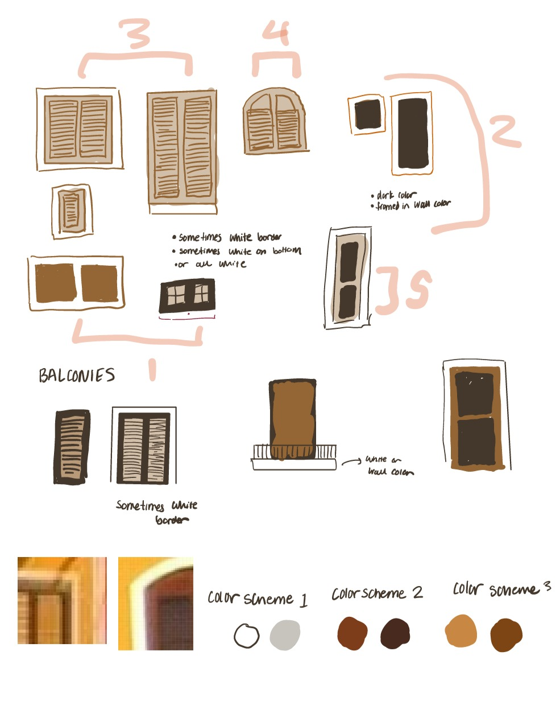

Parametric Design: Random House Generator for Portsaplaya, Valencia, Spain
Port Saplaya
Port Saplaya is a beachfront mixed-use development constructed in the early 1970s. It is often referred to as the "Little Venice" of Valencia due to its intricate network of canals and waterways that wind through the complex. The architecture can be defined as a Mediterranean style, characterized by its stucco exteriors, terracotta roofs, and arched windows. A defining feature of the development is the pastel colors of the houses, which reflect the vibrant nature of this community.
Visual Research
My approach began with visual research to study the architectural and decorative styles. I collected images of Port Saplaya and sketched the facades to identify key design elements. These findings led to the formulation of design rules that would guide the parametric sketch.

Design Rules
From the images I created design rules that governed house dimensions, color palettes, and facade details. Algorithms determined the size and placement of arched windows and decorative elements.


Random Window Parameters
From the images I created design rules that governed house dimensions, color palettes, and facade details. Algorithms determined the size and placement of arched windows and decorative elements.

Final Product